Centre d’amusement intérieur — fêtes · groupes · familles — Fabreville · Laval
Stratégie d’achalandage familial
L’un des plus grands centres de jeux intérieurs du genre au Canada, en plein sur Curé-Labelle. Un plan pour le ramener dans le fil des Lavallois — et transformer cette visibilité en fêtes d’anniversaire et en sorties de groupe réservées chaque semaine.
SEPTEMBRE 2026MANDAT OCT. – DÉC.TGS · 111 CHABANEL OUEST, MONTRÉAL
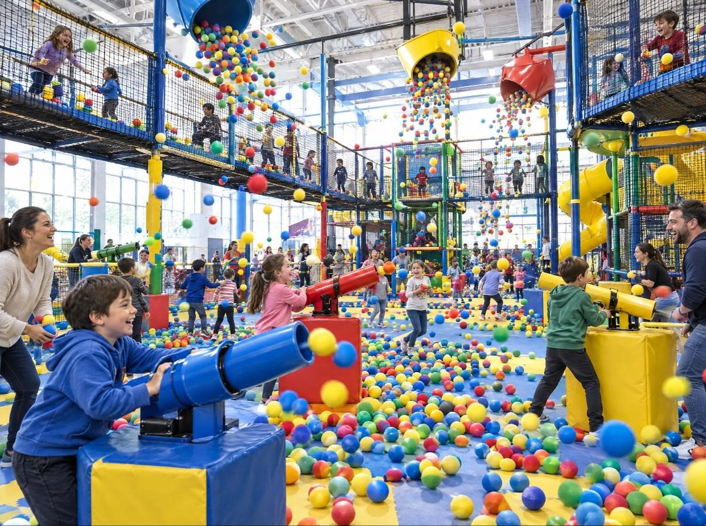
L’occasion
Funtropolis × TGS
Le plus grand terrain de jeu à Laval. Et pourtant, il passe inaperçu.
Un centre d’amusement intérieur sur le boulevard Curé-Labelle depuis 2006 — un labyrinthe de quatre étages, le Ball-O-Cité, le Spin Zone, le X-Rider et le tout nouveau QBIX — noté 4,3★ par les familles qui le connaissent déjà.
Les parents choisissent le lieu de la prochaine fête dans leur fil d’actualité, des semaines avant de prendre le téléphone. L’Instagram de Funtropolis Laval n’a presque rien publié depuis 2021. Le plan : transformer les attractions, les fêtes et l’équipe que vous avez déjà en pubs qui amènent des demandes de fête et des réservations de groupe — sur Instagram et Facebook.
Le plaisir n’a pas à changer. Ce qui doit changer, c’est le nombre de parents de Laval qui l’ont vu avant le prochain samedi pluvieux.
Préparé pour le Centre d’Amusement Funtropolis — Stratégie d’achalandage familial
02
01 — L’objectif
Funtropolis × TGS
L’objectif SMART
Un seul objectif derrière chaque vidéo, chaque campagne et chaque rapport.
L’objectif, en une ligne
Remplir les fins de semaine de fêtes d’anniversaire réservées en ligne, les jours de semaine de groupes de garderies et d’écoles, et relier chaque réservation à sa campagne.
Le plan en un coup d’œil
S
Spécifique — des fêtes et des groupes, près du centre
Des parents de Laval et de la Rive-Nord qui planifient l’anniversaire d’un enfant de 2 à 12 ans — et les garderies, CPE, écoles et camps de jour qui cherchent une sortie en semaine.
M
Mesurable — demandes, fêtes réservées, journées de groupe
Quatre chiffres clés : les demandes de fête issues des campagnes, les fêtes réservées avec dépôt, le coût par fête réservée et les réservations de groupe issues de ces demandes.
A
Atteignable — bâti sur ce qui existe
Deux forfaits fête déjà tarifés, un rabais lève-tôt de 60 $, des tarifs de groupe dès 30 enfants, 4,3★ sur Google et 88 % de recommandations sur Facebook (1 710 avis).
R
Réaliste et pertinent — une fête remplit une table
Une fête Deluxe commence à 399,99 $ avant les invités supplémentaires — et fait entrer huit autres familles, chacune avec un anniversaire à venir.
T
Temporel — d’octobre à décembre
Trois mois, avec un bilan mensuel — y compris les anniversaires de décembre, le congé des Fêtes et les premières fêtes d’hiver réservées avant la fin de l’année.
Ce à quoi nous nous engageons. Le contenu, les campagnes, le suivi et les rapports, c’est nous. Ce qui se passe le jour J — l’accueil, la table, la fête — est mesuré, pas promis.
Filmer le centre→Lancer 4 campagnes→Demande de fête→Dépôt payé→Jour de la fête
Préparé pour le Centre d’Amusement Funtropolis — Stratégie d’achalandage familial
03
02 — Le parcours de la famille
Funtropolis × TGS
Du fil à la fête
Un anniversaire ne se réserve pas sur un coup de tête — ce sont des semaines de « on la fait où cette année? » avant le premier appel. Le plan couvre tout le cycle, pas seulement un clic.
Chaque fête
en amène huit autres
On la voit
Quelqu’un voit défiler le Ball-O-Cité au ralenti, un enfant sur la glissade triple ou une table de fête qui attend ses invités.
On demande
On touche « Réserver une fête » et on arrive sur votre nouvelle page de fête — date, forfait, nombre d’enfants, le tout envoyé en moins d’une minute.
C’est mesuré
Chaque demande sur votre site est reliée à la campagne, au placement et à la pub qui l’ont lancée.
La fête
Votre équipe confirme, prend le dépôt et mène les invités à leur table. Elle fait ce qu’elle fait déjà de mieux.
On revient, on en parle
La prochaine visite du fêté est gratuite. Huit invités repartent en voulant leur propre fête.
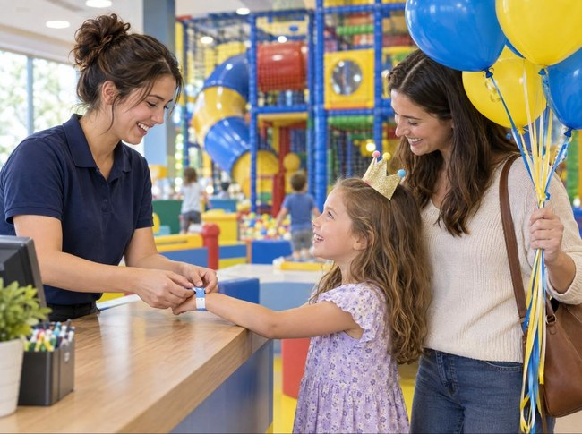
Votre centre est l’avantage. La plupart des endroits pour enfants annoncent un logo et une liste de prix. Un labyrinthe de quatre étages, un complexe que Tourisme Laval compte parmi les plus grands du genre au Canada et des fêtes clé en main : aucun concurrent ne peut copier ça. On s’assure simplement que Laval le voie.
Préparé pour le Centre d’Amusement Funtropolis — Stratégie d’achalandage familial
04
03 — De la pub à la demande de fête
Funtropolis × TGS
De la pub à la fête
Ce qu’un parent de Laval voit, touche et remplit en moins d’une minute, sur Instagram ou Facebook.
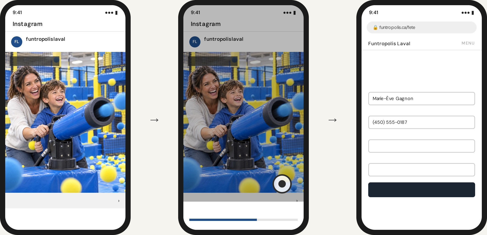
Accueil
Accueil
Commandité
Commandité
LE BALL-O-CITÉ
LE BALL-O-CITÉ
Réserver une fête
Réserver une fête
funtropolislaval Un anniversaire qui s’en vient? Table, repas et trois heures de plaisir.
Ouverture de funtropolis.ca…
Réservez votre fête
Choisissez une date et un forfait — on vous rappelle pour confirmer la table et prendre le dépôt.
Nom du parent
Téléphone
Date de la fête
Forfait et enfants
Sam. 14 nov. — 9 h (lève-tôt)
Deluxe · 12 enfants, fête de 7 ans
Demander ma fête
1
Voir la pub
Une vidéo de 20 secondes du Ball-O-Cité apparaît entre les publications des amis et de la famille.
2
Toucher « Réserver »
Un seul clic ouvre votre site Web — pas besoin d’attendre qu’on réponde au téléphone un samedi achalandé.
3
Envoyer la demande
Une nouvelle page de fête sur votre site, suivie par le pixel Meta. Votre réception rappelle pour confirmer la table.
Même pub, trois placements — une seule page de fête
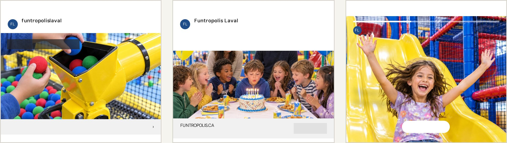
Fil Instagram
Fil Facebook
Stories Instagram
Commandité
Commandité
40 CANONS, UNE ARÈNE
Réserver une fête
Les fêtes, on s’en occupe. Huit enfants, un repas chacun, trois heures de plaisir — apportez juste le gâteau.
Ouvert 7 jours — Laval
Réserver
funtropolislaval · Commandité
Trois glissades. Un grand sourire.
Réserver une fête ›
Pub affichée→Toucher « Réserver une fête »→Page de fête→Demande envoyée→Attribuée à la pub
Préparé pour le Centre d’Amusement Funtropolis — Stratégie d’achalandage familial
05
The Golden Standard · Partout à Laval
Funtropolis × TGS
Haut de gamme · Exclusif à The Golden Standard · 4 000 $ / mois
100 balles dorées. Une ville.
Cent balles de mousse dorées — la balle la plus rare du Ball-O-Cité, chacune avec son propre code — cachées partout à Laval, dans les parcs, les cafés et sur les babillards communautaires. Qui en trouve une la publie, identifie @funtropolislaval et l’apporte au centre pour une entrée enfant gratuite.
Balle 037 · Trouvée à Fabreville
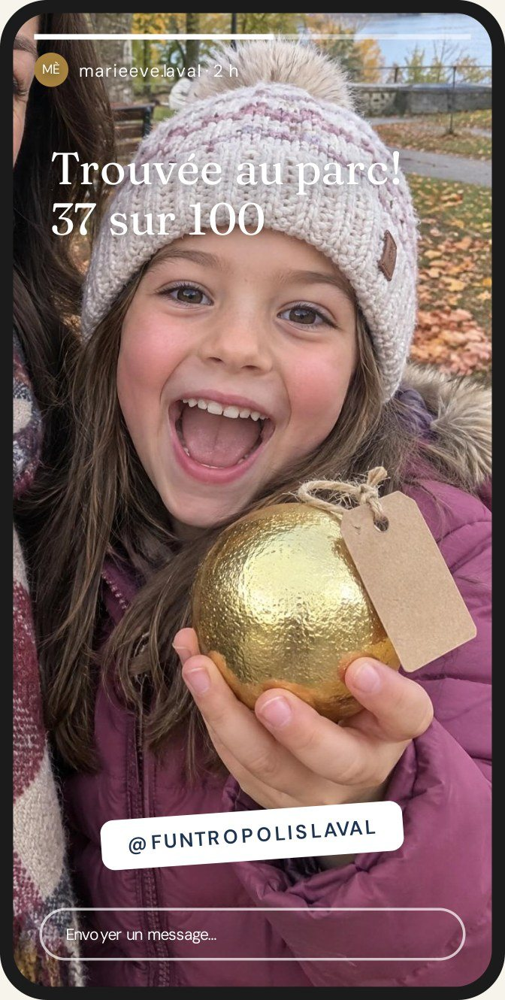
01
Cachées partout à Laval
TGS dépose 100 balles dorées numérotées partout en ville — avec la permission des commerces du coin — et filme chaque cachette pour l’aperçu.
02
Trouvée, publiée, identifiée
Pour la réclamer, le parent de l’enfant qui l’a trouvée publie une story qui identifie @funtropolislaval. Chaque story montre Funtropolis à ses propres abonnés — une portée gratuite qu’on peut compter.
03
Rapportée au labyrinthe
Chaque étiquette porte son propre code, de BALLE-001 à BALLE-100 — pour voir exactement combien de trouvailles sont devenues des visites, et combien de visites, des fêtes.
La campagne derrière la chasse. L’une des quatre campagnes The Golden Standard anime la chasse : aperçus, mises à jour hebdo « trouvées jusqu’ici » et repartage de chaque trouvaille — la balle et l’endroit. Elle vise les parents, comme chaque pub du plan. Funtropolis offre les 100 entrées gratuites; les règles (une par famille, présence d’un adulte requise, valide jusqu’au 31 décembre 2026) figurent sur chaque étiquette.
Préparé pour le Centre d’Amusement Funtropolis — Stratégie d’achalandage familial
06
04 — Le public cible
Funtropolis × TGS
À qui on s’adresse
Trois profils — tous adultes — rejoints chacun différemment.
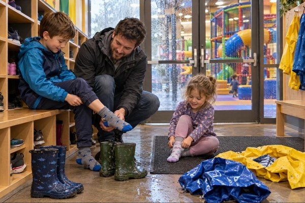
Le parent des jours de pluie
Deux enfants, un samedi gris et rien de prévu. Cherche un endroit pour les épuiser — et veut connaître le prix avant de quitter la maison.
Où le rejoindre : rayon Facebook et Instagram autour du centre, pubs lève-tôt, la chasse aux balles dorées
L’organisateur de fête
Un anniversaire s’en vient d’ici six semaines. Compare les endroits à dix heures le soir — veut le forfait, le prix et la date sans avoir à téléphoner.
Où le rejoindre : Reels et Stories Instagram, la page de fête, reciblage de quiconque a consulté les forfaits
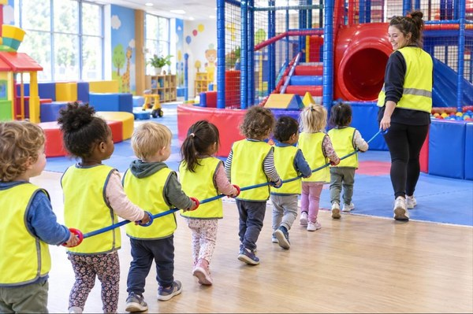
Le responsable de groupe
Dirige une garderie, un CPE, un groupe scolaire ou un camp de jour. Veut une sortie en semaine, l’entrée gratuite pour les éducateurs et une facture pour 30 enfants ou plus.
Où le rejoindre : fil Facebook ciblant garderies et écoles de Laval, contenu sur les tarifs de groupe, suivi direct
CE QUI COMPTE POUR EUX
Savoir ce qui est inclus avant de payer
Un endroit propre et sûr, du personnel sur place
Une fête clé en main — table, repas, plaisir
Réserver en deux clics, à dix heures le soir
OÙ ON LES REJOINT
Fil, Reels et Stories Instagram
Fil Facebook, rayon autour du centre
Un clic de la pub à votre page de fête
Reciblage et audiences similaires des visiteurs du site
Pourquoi la vidéo fonctionne
Une liste d’attractions demande au parent d’imaginer son enfant dans le labyrinthe. Une vidéo de vingt secondes lui montre les balles de mousse qui volent, la glissade triple et la table qui attend les invités. L’une obtient « peut-être la fin de semaine prochaine ». L’autre, une fête réservée ce soir.
Préparé pour le Centre d’Amusement Funtropolis — Stratégie d’achalandage familial
07
05 — Le contenu
Funtropolis × TGS
Ce qu’on va créer
20 contenus par mois — 12 vidéos, 8 publications — filmés sur place, sous-titrés FR et EN.
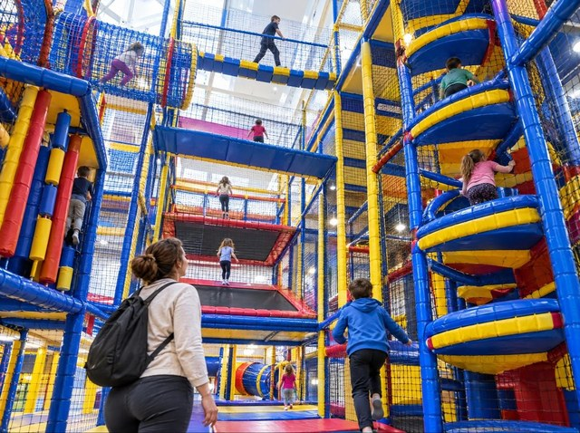
Dans le labyrinthe
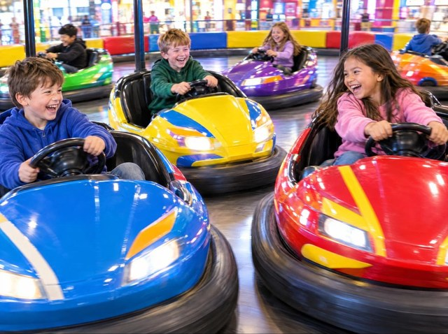
Spin Zone
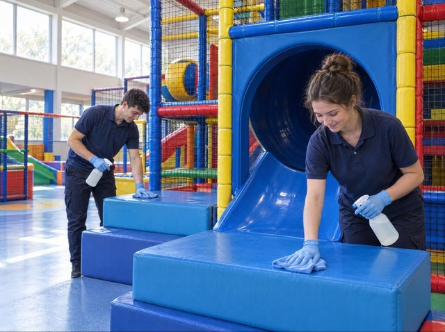
Les coulisses du plaisir
Filmé dans votre centre — chaque enfant à l’écran avec le consentement écrit et révocable d’un parent.
Au cœur de Funtropolis
4 / MOIS
Le labyrinthe, le Ball-O-Cité, le Spin Zone, le X-Rider et le QBIX — filmés comme un enfant les vit.
Le labyrinthe, de haut en basLe Ball-O-Cité au ralentiLe QBIX, expliqué
Une fête chez Funtropolis
4 / MOIS
À quoi ressemble vraiment une fête — l’accueil, la table, le repas, la surprise d’anniversaire.
Deluxe ou Classique?Le lève-tôt de 9 hUne fête, du début à la fin
Le guide des parents
4 / MOIS
Les prix, ce qui est inclus, les bas, la nourriture et les heures tranquilles — réglés avant même de monter dans l’auto.
Ce qui est inclusApportez votre lunchJournée pédago? Voici le plan
Groupes et garderies
4 / MOIS
Des sorties en semaine pour les CPE, garderies, écoles et camps de jour — ratios, tarifs et facturation, simplifiés.
Une matinée de CPEGratuit pour les éducateursRéservez 7 jours d’avance
Les coulisses du plaisir
4 / MOIS
L’équipe qui ouvre, nettoie et anime l’aire de jeux — qui ils sont, et comment ils assurent la sécurité.
Avant l’ouverture des portesRencontrez les animateursAu-delà des normes
Préparé pour le Centre d’Amusement Funtropolis — Stratégie d’achalandage familial
08
06 — Le calendrier de contenu · Mois 1
Funtropolis × TGS
Octobre 2026
20 contenus — 12 vidéos, 8 publications — du lundi au vendredi. La bande de la semaine nomme sa campagne.
Au cœur de FuntropolisUne fête chez FuntropolisLe guide des parentsGroupes et garderiesLes coulisses du plaisirLa chasse aux balles dorées · Golden Standard
LUNDIMARDIMERCREDIJEUDIVENDREDI
Sem. 1A · La chasse aux balles dorées— Lancement · 100 balles dorées cachées partout à LavalToutes les familles du coin
1er oct.VIDÉO
Le labyrinthe, de haut en basQuatre étages en 40 secondes
2 oct.VIDÉO
La chasse est lancée100 balles dorées cachées à Laval
Sem. 2B · Réservez la fête— Demandes · Instagram et Facebook vers votre page de fêteOrganisateurs de fêtes
5 oct.VIDÉO
Le Ball-O-Cité au ralenti40 canons, des milliers de balles
6 oct.PUBLICATION
Une fête, du début à la finCarrousel : de l’accueil au gâteau
7 oct.VIDÉO
Deluxe ou Classique?Ce que comprend chaque forfait
8 oct.PUBLICATION
Ce qui est inclusEntrée, extras et jetons — clairement
9 oct.VIDÉO
Avant l’ouverture des portesComment l’aire de jeux se prépare
Sem. 3C · Sorties en semaine— Demandes · CPE, garderies, écoles et camps de jourResponsables de groupes
12 oct.
Action de grâceCongé · aucune publication
13 oct.VIDÉO
Une matinée de CPEEn rang, bas aux pieds, on y va!
14 oct.PUBLICATION
Gratuit pour les éducateurs1 gratuit par 6 enfants, tarifs dès 30 enfants
15 oct.VIDÉO
Spin Zone12 autos tamponneuses, un premier permis
16 oct.VIDÉO
Rencontrez les animateursCeux qui accueillent vos invités
Sem. 4D · Encore indécis— Reciblage · vues vidéo, visites du profil et du siteLes trois
19 oct.VIDÉO
Le plan samedi pluvieuxBas, collations, quatre heures
20 oct.PUBLICATION
Cinq questions avant une fêteVos questions, nos réponses
21 oct.VIDÉO
Le QBIX, expliquéLe tout nouveau jeu du centre
22 oct.PUBLICATION
Réservez 7 jours d’avanceLe déroulement d’une sortie
23 oct.VIDÉO
Le lève-tôt de 9 h60 $ de rabais sur tout forfait fête
Sem. 5La meilleure campagne amplifiée— Les quatre actives · le budget suit les réservationsLes trois
26 oct.VIDÉO
Au-delà des normesComment les structures restent sécuritaires
27 oct.PUBLICATION
Trouvées jusqu’iciOù les balles sont apparues
28 oct.PUBLICATION
Journée pédago? Voici le planLes journées pédagogiques, planifiées
29 oct.PUBLICATION
Certificats-cadeauxLe cadeau des Fêtes qui les épuise
30 oct.
Rapport mensuelRésultats d’octobre et plan de novembre
Conforme aux règles du Québec. Chaque contenu est vérifié avant sa mise en ligne : les pubs s’adressent aux parents, jamais aux moins de 13 ans (Loi sur la protection du consommateur, art. 248); aucun enfant filmé sans le consentement écrit d’un parent; prix affichés comme sur votre site, taxes en sus; chaque offre avec ses conditions et sa date de fin; une copie de chaque pub archivée.
Préparé pour le Centre d’Amusement Funtropolis — Stratégie d’achalandage familial
09
07 — Les campagnes
Funtropolis × TGS
Des campagnes tirées du contenu
Chaque vidéo devient aussi une pub Instagram ou Facebook. Ce qui fonctionne le mieux reçoit le budget, et chaque clic mène à votre page de fête — le coût par fête est connu dès le jour 1.
A · Golden Standard
La chasse aux balles dorées
Stories et Reels Instagram · fil Facebook
Public : familles de tout Laval
Aperçus, mises à jour hebdo « trouvées jusqu’ici » et repartage de chaque trouvaille identifiant @funtropolislaval — jusqu’aux abonnés de chaque famille.
Des pubs sur les fêtes, les forfaits et le rabais lève-tôt avec un bouton « Réserver une fête » qui ouvre votre page de fête — les demandes vont droit à votre réception.
Indicateurs : demandes de fête, coût par fête réservée
C · Groupes
Sorties en semaine
Fil Facebook · Instagram
Public : garderies, CPE, écoles et camps
Du contenu sur les tarifs de groupe et l’entrée gratuite des éducateurs, pour ceux qui planifient les sorties — menant à une demande de groupe, pas à un appel de vente.
Indicateurs : demandes de groupe, enfants réservés
D · Reciblage
Encore indécis
Instagram et Facebook · tous les placements
Public : tous ceux qui ont interagi
Ceux qui ont regardé, visité le profil ou ouvert la page de fête sans réserver voient la table, le repas et le lève-tôt, puis l’invitation.
Indicateurs : réservations, coût par fête
Trois mois, trois priorités
OCTOBRE
Bâtir le système
Page de fête et pixel, acheminement à la réception, premiers tournages — et le point de départ de toutes les mesures.
NOVEMBRE
Réserver les Fêtes
Anniversaires de décembre, sorties des Fêtes, certificats-cadeaux. Le budget suit la campagne qui réserve le plus.
DÉCEMBRE
Vingt ans sur Curé-Labelle
Funtropolis a 20 ans — une campagne anniversaire pendant les Fêtes, et le reciblage remplit les fêtes d’hiver.
Ce que vous voyez chaque mois
DEMANDES DE FÊTE
—
point de départ fixé en octobre
FÊTES RÉSERVÉES
— %
des demandes, dépôt payé
COÛT PAR FÊTE
— $
par campagne et placement
ENFANTS EN GROUPE
—
réservés via les campagnes
Les pubs sont déjà payées. Le budget publicitaire est inclus dans votre formule mensuelle — pas de facture Meta à part, pas de recharge surprise. Vous restez propriétaire de chaque page, compte et séquence vidéo.
Préparé pour le Centre d’Amusement Funtropolis — Stratégie d’achalandage familial
10
08 — Le mandat
Funtropolis × TGS
Deux façons de grandir
Les mêmes 20 contenus par mois dans les deux cas — et le budget publicitaire est déjà dans le prix, donc aucune deuxième facture de Meta. La différence : jusqu’où le contenu se rend.
STANDARD
3 000 $/ MOIS
20 CONTENUS · 1 CAMPAGNE VEDETTE
● BUDGET PUB INCLUS
Tout ce qu’un parent doit voir — et une campagne pour le montrer aux bonnes familles.
20 contenus par mois — 12 vidéos, 8 publications
Sous-titres français et anglais, registre québécois
1 campagne vedette par mois — réservations de fêtes
Pixel Meta sur la page de fête, chaque demande suivie
Chaque contenu vérifié selon les règles publicitaires du Québec
Rapport mensuel
Campagnes additionnelles, reciblage et chasse aux balles dorées
THE GOLDEN STANDARD · RECOMMANDÉ
4 000 $/ MOIS
20 CONTENUS · 4 CAMPAGNES · LA CHASSE
● BUDGET PUB INCLUS
Toute la formule Standard, avec plus de portée en ligne et une chasse à travers Laval que les familles partagent.
20 contenus par mois — 12 vidéos, 8 publications
Sous-titres français et anglais, registre québécois
1 campagne vedette par mois — réservations de fêtes
Pixel Meta sur la page de fête, chaque demande suivie
Chaque contenu vérifié selon les règles publicitaires du Québec
Rapport mensuel
PLUS
3 campagnes de plus — chasse, groupes, reciblage
Audiences similaires et revue hebdo des réservations
100 balles dorées cachées partout à Laval ↓
Exclusif à The Golden Standard · 4 000 $ / mois
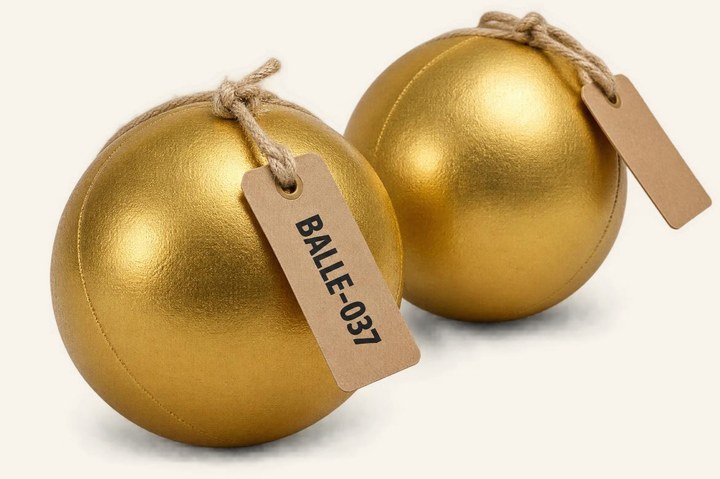
La chasse aux balles dorées
100 balles de mousse dorées, chacune valant une entrée enfant gratuite, cachées partout à Laval. Pour la réclamer, une famille publie une story identifiant Funtropolis — puis l’apporte à sa prochaine visite. L’une de vos quatre campagnes transforme chaque trouvaille en portée supplémentaire.
100 balles dorées numérotées, étiquetées et déposées par TGS
Une campagne dédiée : aperçus, mises à jour, repartages
Chaque balle suivie de la trouvaille jusqu’à la réception
30
jours
Clause de satisfaction · Les deux formules
Pas satisfaits après le premier mois? Partez, tout simplement.
Si le premier mois ne vous convient pas, mettez fin à l’une ou l’autre des formules par avis écrit avant le début du deuxième mois — sans pénalité ni frais; les mois deux et trois ne sont jamais facturés. Vous payez seulement le mois livré et conservez toutes les vidéos, publications et tous les comptes que nous avons créés. Personne n’est lié pour trois mois.
Préparé pour le Centre d’Amusement Funtropolis — Stratégie d’achalandage familial
11
09 — Prochaines étapes
Funtropolis × TGS
Par où on commence
Six étapes jusqu’à la première fête attribuée à une campagne.
01
Choisir la formule, partager le point de départ
Standard ou The Golden Standard. Puis, environ combien de fêtes vous accueillez par mois, comment les familles vous ont trouvés et combien de journées de groupe vous faites.
02
Donner les accès
Meta Business Manager, le compte publicitaire, les pages Instagram et Facebook, et le site Web — ou une mise en contact avec votre agence Web — pour la nouvelle page de fête et le pixel.
03
Confirmer les offres
Les forfaits mis de l’avant, les tarifs lève-tôt et de groupe de la saison (votre site indique encore « appelez-nous » pour les groupes), si on souligne les 20 ans sur Curé-Labelle en décembre, et les règles des 100 balles dorées.
04
Nommer votre personne-ressource
Qui rappelle les familles qui demandent une fête et approuve le contenu chaque semaine. Le budget pub est déjà inclus dans votre formule.
05
Réserver les premiers tournages
Deux matinées de semaine au centre ce mois-ci — le labyrinthe, le Ball-O-Cité, une table de fête — et des familles heureuses d’être filmées, avec leur consentement écrit.
06
Approuver le calendrier d’octobre
Approuver la répartition des contenus pour que la production et les premières campagnes démarrent le 1er octobre.
On se déplace. Les tournages se font avant l’ouverture ou lors de matinées tranquilles en semaine — pour qu’aucune visite de famille ne soit interrompue par la caméra. Curé-Labelle est à quelques minutes de notre studio sur Chabanel.
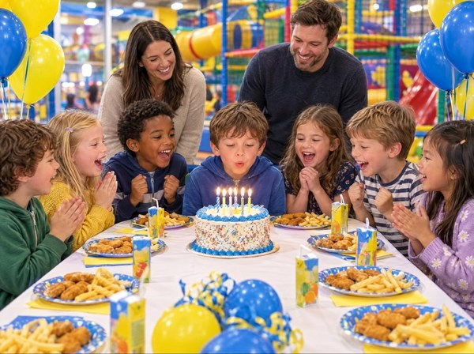
TGS Visuals / Productions
pour le Centre d’Amusement Funtropolis — Fabreville, Laval